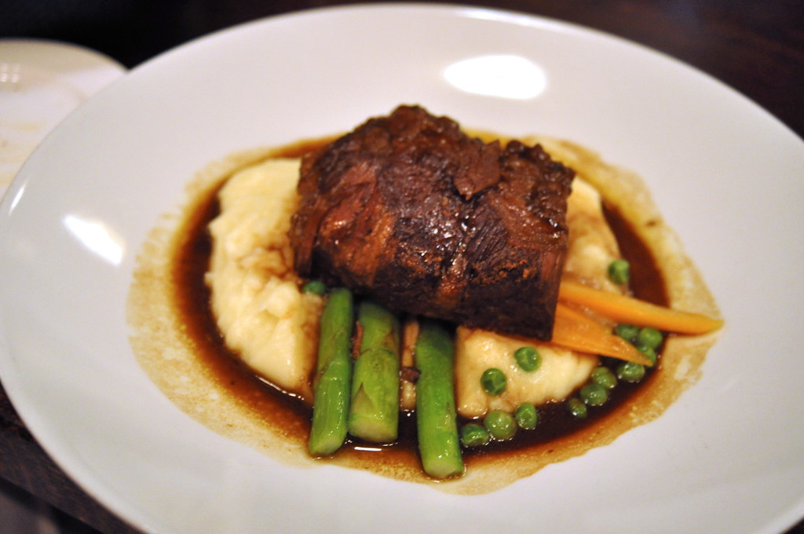

Braised Beef Short Ribs

Description
If you're looking for a meal to impress people, this is the one. These braised beef short ribs are such a rich, comforting meal that will leave everyone thinking you're a culinary genius!
Although the cook-time is long, the hands-on process is straightforward. If you have an instant pot, the cook-time is minimal as well.
Ingredients
- 3 Tbsp olive oil
- 1 yellow onion, diced
- 3 carrots, chopped
- 8 whole beef short ribs, bone-in (English-cut)
- Salt and pepper, to taste
- ¼ cup all-purpose flour
- 1 cup dry red wine (Such as Cote du Rhone or Pinot Noir)
- 2 1/2 cups low-sodium beef broth
- 2 Tbsp tomato paste
- 2 sprigs fresh thyme
- 2 sprigs fresh rosemary
Steps
- Preheat oven to 350 degrees F.
- In a large dutch oven or oven safe pot with a lid, heat one tablespoon of oil over medium high heat. Add onion and carrots and cook for a few minutes, stirring constantly. Remove veggies to a plate.
- IP: Turn to sauté setting. Add 1 tablespoon of oil to the pot. Once hot add onion and carrots and cook for a few minutes, stirring constantly. Remove veggies to a plate.
- Season the ribs with salt and pepper and coat on all sides with flour. Add 2 more tablespoons of oil to the pot and turn to high heat. Add ribs and brown on all sides, about 45 seconds per side. Remove to a plate.
- Add the wine to de-glaze the pan. Scrape the bottom of the pan to release any browned bits of flavour. Bring to a boil and cook 2 minutes.
- Add beef broth, salt, and freshly ground black pepper. Stir in tomato paste. Taste broth and add additional seasoning, if needed.
- Add ribs, veggies, and (whole) sprigs of thyme and rosemary to the pot.
- Tip: Tie the sprigs of thyme and rosemary into a bundle with twine so you can fish out the sprigs easily before serving.
- Cover the lid and place into the oven. Cook at 350 degrees for 2 hours, then reduce heat to 325 degrees and cook for an additional 30 to 45 minutes. Ribs should be very tender, nearly falling off the bone.
- IP: Cook on Manual/High pressure for 45 minutes.
- Remove the pan from oven and allow rest for 20 minutes, with the lid on, before serving.
- IP: Allow the pressure to release for 15 minutes before removing the lid.
- Serve ribs over mashed potatoes with one (or many) spoonful(s) of gravy from the pot.
- Store leftover short ribs in a sealed container in the refrigerator for 3-4 days depending on the freshness of the ingredients.
Want to browse more recipes? Odin Recipes